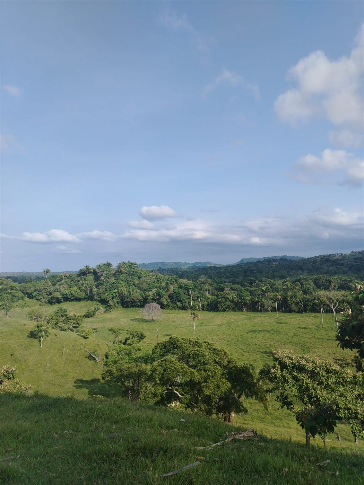
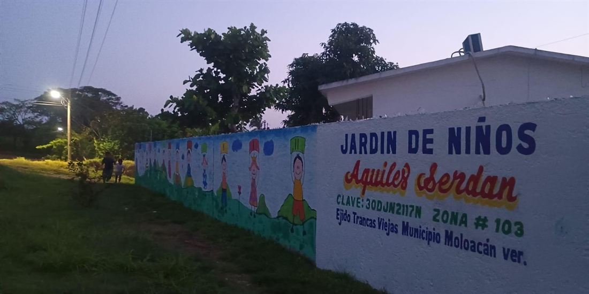
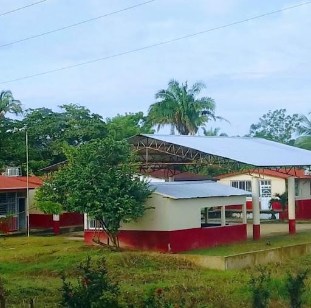
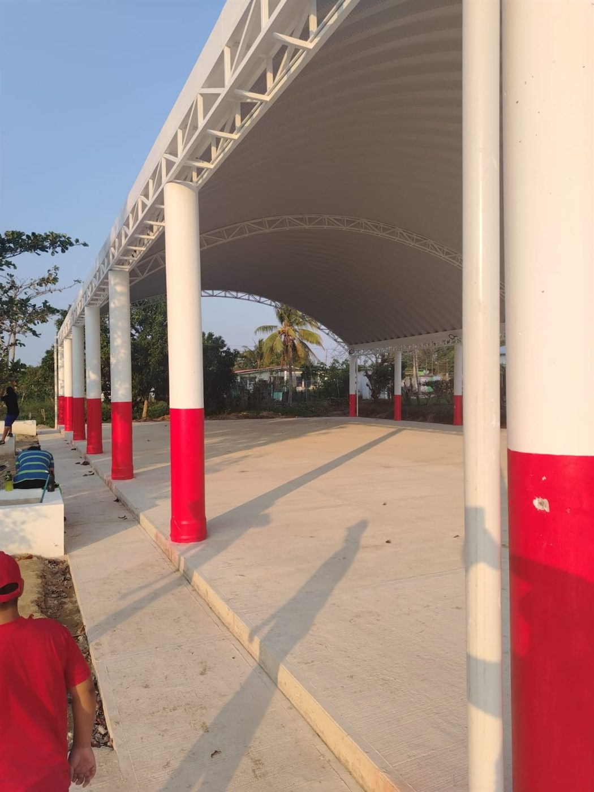

Vivero Comunitario
Espacio dedicado a la reforestación, el cultivo y el cuidado de la vegetación local.
Conoce los espacios, parcelas, escuelas y rincones cotidianos de nuestra comunidad.
Trancas Viejas cuenta con espacios clave que forman parte de nuestro día a día: desde nuestras escuelas y el vivero comunitario hasta las parcelas, caminos y el domo ejidal.
Esta sección reúne imágenes reales de estos rincones para conservar un registro vivo de nuestro pueblo y su entorno natural.

Espacios comunitarios, educativos y paisajes que forman parte de Trancas Viejas.
Espacio dedicado a la reforestación, el cultivo y el cuidado de la vegetación local.

Plantel de educación preescolar para las primeras infancias de nuestro pueblo.

Instalación educativa donde se forman los jóvenes de nuestra localidad.

Corredor ferroviario histórico que atraviesa el paisaje de la comunidad.

Vista del acceso principal a la comunidad durante las tardes.

Punto de encuentro para asambleas ejidales, eventos y actividades deportivas.
Vista abierta de las lomas, potreros y vegetación de la región.
El entorno de Trancas Viejas forma parte central de nuestra identidad. Sus caminos de tierra, potreros y arboledas reflejan la vida pacífica del campo veracruzano.
Conservar estas imágenes permite compartir con las futuras generaciones el valor de nuestra tierra y de nuestra gente.
"Los lugares también forman parte de la memoria de una comunidad."— Memoria Viva de Trancas Viejas